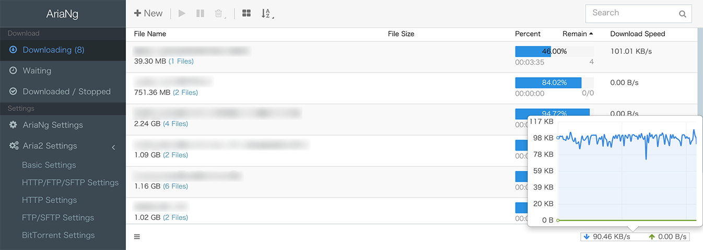

aria2 上手测评：命令行下载工具凭什么让我把迅雷卸了
一个用惯了图形下载器的人转向 aria2 的真实体验：多连接提速、RPC 远程控制、守护进程挂机，这些命令行特性到底香不香，又有哪些地方让人挠头。
说实话，我装 aria2 的契机挺尴尬的——去年年底折腾一台迷你主机当家用服务器，想找个能 24 小时挂着跑下载、还能远程管理的工具。迅雷服务器版试过，广告越来越多还偷偷上传；qBittorrent 倒是安静，但 HTTP 直链下载表现一般，而且俩家伙都是图形界面，在没显示器的服务器上跑着总觉得别扭。
搜了一圈最后落到 aria2 头上。这个开源命令行工具我早就听过名字，aria2官网上常年挂着完整的参数手册——但一直没真正用过——总觉得命令行下载是极客玩具，跟我这种习惯了"点一下就好"的用户不搭。抱着试试看的心态装了，结果用了一周就把迅雷卸了。
初印象：就一条命令？
安装过程没什么好说的，包管理器一行搞定，Windows 用户去下载页拿预编译二进制也很方便。装好打开终端，我对着文档敲出第一条命令的时候愣了一下：就这？
aria2c "https://example.com/somefile.zip"给个地址，回车，进度条直接在终端里刷起来，下载完自动退出，文件就在当前目录。没有弹窗、没有广告、没有"要不要设为默认下载器"的询问——干净得让人有点不习惯。
第一次用的时候我还傻乎乎地把链接拆开来敲，结果带 & 符号的磁力链接直接报错。后来才知道 shell 里 URL 必须用引号包起来，不然 & 会被当成后台执行符截断。这个小坑踩过一次就记住了，不算什么大问题。
真正让我留下来的几个点
多连接提速是真的猛
以前用单连接下载器碰到限速服务器，速度就卡在几百 KB 上不去。aria2 默认就开 5 条连接，一条命令把 --max-connection-per-server=16 加上，直接把一条下载任务拆成 16 条并发连接。说实话第一次看到速度从 300KB/s 飙到 8MB/s 的时候，我盯终端盯了好一会儿——这速度比我家宽带理论上限还快，aria2 到底是怎么做到的？
后来才搞明白，不是 aria2 突破了物理限制，而是很多服务器对单连接有限速、但总带宽没满。多连接相当于绕过了单连接限速，把服务器的剩余带宽吃满。这个特性对我这种经常从海外服务器拉大文件的人来说，简直是刚需。
而且多任务并行也很省心。-j3 同时跑三个任务，每个任务各自开自己的连接池，互不干扰。终端进度行里 CN:16 DL:8.2MiB 那几个数字每次看都有种跑满带宽的快感。
断点续传比我想的还靠谱
Ctrl-C 停掉一个下载，过两天在同一个目录重跑同一条命令，aria2 会自动从断点继续——连文件都不用删。换成同一个文件的不同镜像地址也行，它会自动合并进度。这个特性我之前在别的下载器上也见过，但 aria2 的实现明显更稳，从来没出现过"续传失败要重下"的情况。
RPC + 守护进程：把服务器变成下载机
这是 aria2 最让我惊喜的玩法，也是我把它装到迷你主机上的真正原因。
以前想让下载器 24 小时挂着跑，要么开着一个桌面环境占内存，要么用 VNC 远程看个图形界面——都不够优雅。aria2 有个 -D 参数，加上之后进程直接转后台，终端关掉也不影响。再配一个 --save-session，每 60 秒把当前任务清单存进文件，服务器重启之后用 -i 读回来接着跑，断电也不丢。
然后开 RPC 接口，整个下载机就活了：任何设备上装个 AriaNg 这样的前端，浏览器打开就能看到下载列表、加新任务、改参数。我在公司摸鱼的时候用手机把晚上要下的种子塞进家里的下载机，下班回家电影已经躺在硬盘里了。
说实话这套玩法的组合拳我之前在 qBittorrent 上也见过，但 aria2 的优势在于轻量——整个进程常驻内存也就十几 MB，比跑个完整桌面环境省太多。

也说说让我挠头的地方
命令行上手确实有门槛。不是说难，而是"你得先知道有哪些参数"。比如 --file-allocation=falloc 能让大文件预分配快很多，但如果你不知道这个参数，默认的预分配模式在机械硬盘上会卡好几分钟，看起来像死机了一样。再比如 BT 下载的 --bt-trackers、--peer-limit-per-torrent 这些调优参数，全靠翻文档才能搞明白。
配置文件那一套也有点让人头大。虽然支持把常用参数写进 aria2.conf 里省得每次敲长命令，但文件里的注释全是英文，有些参数之间还有依赖关系——比如开了 --enable-rpc 但忘了加 --rpc-secret，等于把下载机的控制权敞开给局域网里任何能扫到端口的人。我第一次配置的时候就踩了这个坑，后来翻到aria2文档里 RPC 密钥那篇才补上。
还有个小毛病：终端进度行默认每秒刷新一次，跑多任务的时候屏幕刷得眼花缭乱。这个可以用 --summary-interval 调大间隔或者设 0 关掉，但又是一个"你得知道有这个参数"的问题。
适合谁，不适合谁
如果你跟我一样有一台 24 小时在线的小机器想当下载机，或者经常从限速服务器拉大文件，aria2 非常值得上手。它轻量、稳定、功能全，而且完全开源没有广告——装一次就能忘了它的存在，安安静静在后台跑。
但如果你只是偶尔下个文件、习惯了图形界面点来点去，那 aria2 可能没必要。命令行的学习成本、参数文档的阅读门槛，对 casual 用户来说确实不如直接用浏览器自带下载器或者 IDM 来得顺手。它不是"更好的图形下载器"，而是"换了一条路解决下载问题"的工具。
最后说一句
用了一个多月，aria2 已经替我接管了家里所有下载任务。从最开始对着参数文档一脸懵，到现在能闭着眼敲出挂机命令，中间踩过的那些小坑反而让我对"下载"这件事本身理解得更深了——原来一个看似简单的"下载"动作，背后可以拆出这么多层：连接管理、磁盘预分配、断点续传、peer 交换。
如果你也在找一个能长期挂机、远程可控的下载方案，或者单纯想试试命令行工具的味道，aria2 值得花一个下午摸一摸。
我整理的 aria2 中文参数参考也同步到了三个代码仓库：GitHub 为主，Gitee 和 GitCode 做国内镜像，打开哪个方便看哪个。